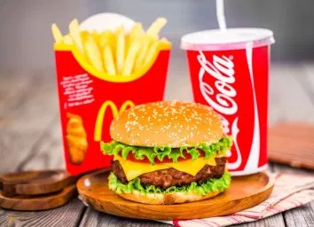
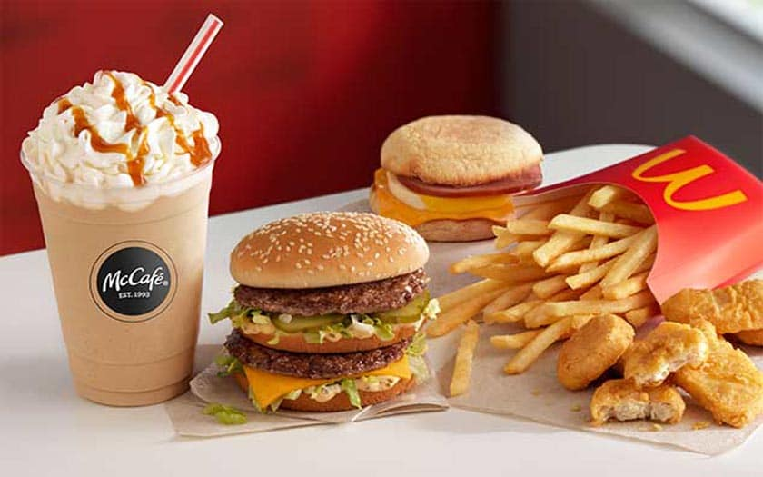

მოგესალმებით ჩვენს საიტზე

მენიუს სანახავად შეგიძლიად გადახვიდეთ შესაბამის ბმულზე
შეუკვეთე და მიირთვი მოკლე დროში

კომპანია 1940 წელს დააარსეს ძმებმა დიკ და მაკ მაკდონალდებმა.
პირველი რესტორანი გაიხსნა სან-ბერნარდინოში (კალიფორნია).
ცნობები ზოგიერთი ქვეყნის ქსელის შესახებ 2010 წლის 15 დეკემბრის მონაცემებით:
- რუსეთში წარმოდგენილია 261 მაკდონალდსის რესტორანი. პირველი რესტორნის გახსნის დღეს, 1990 წლის 31 იანვარს, მას ეწვია 30 000 ადამიანი.
- უკრაინა იყო რიგით 102-ე ქვეყანა, სადაც გაიხსნა მაკდონალდსის რესტორანი. აქ კომპანიის ქსელი ვითარდება 1997 წლის 24 მაისიდან
- მოლდოვაში ფუნქციონირებს მაკდონალდსის 4 რესტორანი, ყველა მათგანი კიშინიოვის ცენტრში მდებარეობს.
- ლატვიაში მუშაობს მაკდონალდსის 8 რესტორანი, ყველა მდებარეობს რიგაში.
- ისრაელში ფუნქციონირებს მაკდონალდსის 169 რესტორანი, ამ რესტორნებში განვითარებულია „მაკდრაივის“ სერვისი, ასევე შესაძლებელია WiFi-ის სარგებლობა
- საქართველოში ფუნქციონირებს მაკდონალდსის 18 რესტორანი.[1]
- აზერბაიჯანში წარმოდგენილია მაკდონალდსის 7 რესტორანი, ყველა ბაქოში მდებარეობს.